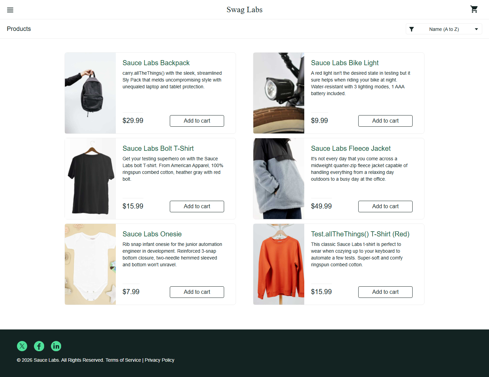
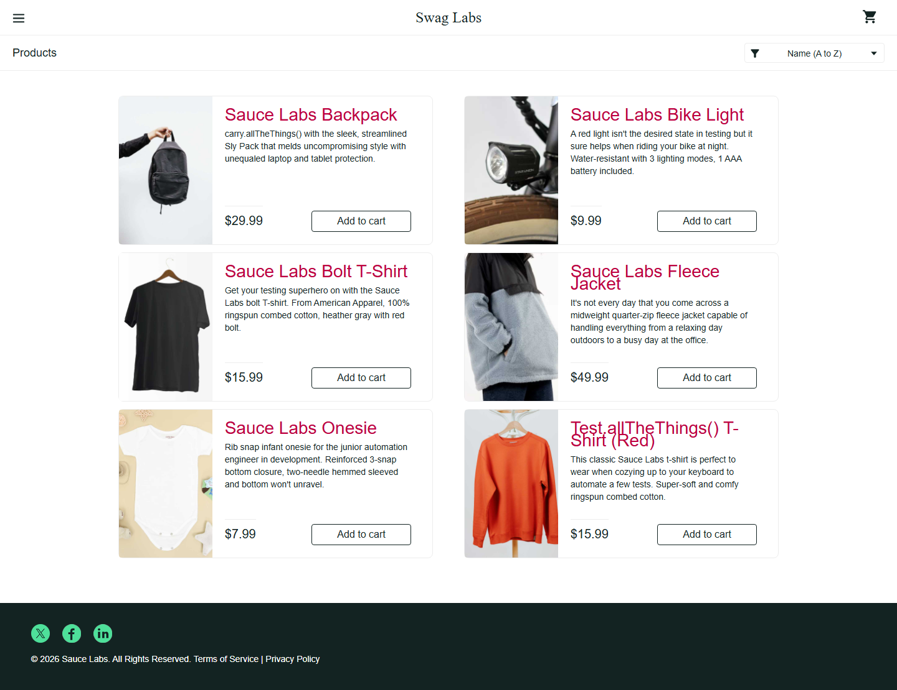
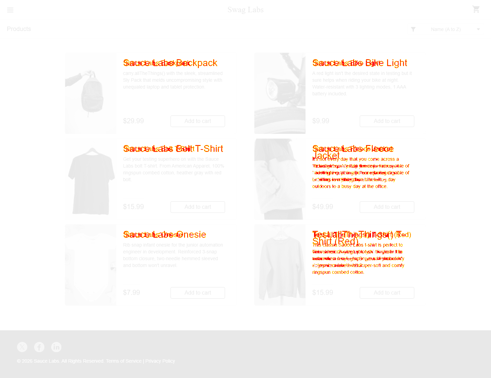

Approve the reference
Capture stable pages with predictable data, fixed viewport sizes, and animation disabled. Review the images before committing.
npm run test:updateA button still works. Its layout is broken.
Functional tests can pass while the UI changes.
This project compares the interface against an approved screenshot—and makes unexpected changes visible.
Explore the comparison ↘

This is the clean reference screenshot. Future runs compare against this approved image.
Unchanged areas are faded. Colored pixels highlight differences. Overlapping text marks the original and changed text positions.

The controlled styling change produced 18,032 different pixels. Playwright saved the expected image, actual image, diff, and trace for investigation.
An actual recorded test result using a local copy of SauceDemo. The change is injected only for this demo; no checkout data or approved baseline is modified. The normal test suite passes.
Open the repo, run the suite,
review the evidence.
Capture stable pages with predictable data, fixed viewport sizes, and animation disabled. Review the images before committing.
npm run test:updatePlaywright compares the current UI with the stored baseline. Functional assertions check that each page reached the intended state.
npm testUse the HTML report and browser trace to investigate. Approve intentional changes through Git review; fix unintended ones.
npm run reportSeven scenarios cover the shopping journey at desktop and narrow viewport sizes. Each test starts with a fresh browser context.
The demo changes product titles and exits with a failed visual assertion. Run the normal suite afterward to return to a passing report.
Read the setup & technical guide ↗# Install dependencies and Chromium npm ci npx playwright install chromium # Passing suite → intentional visual failure npm test npm run demo:regression npm run report